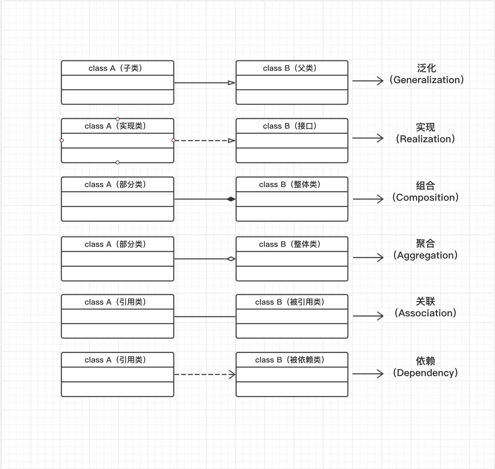
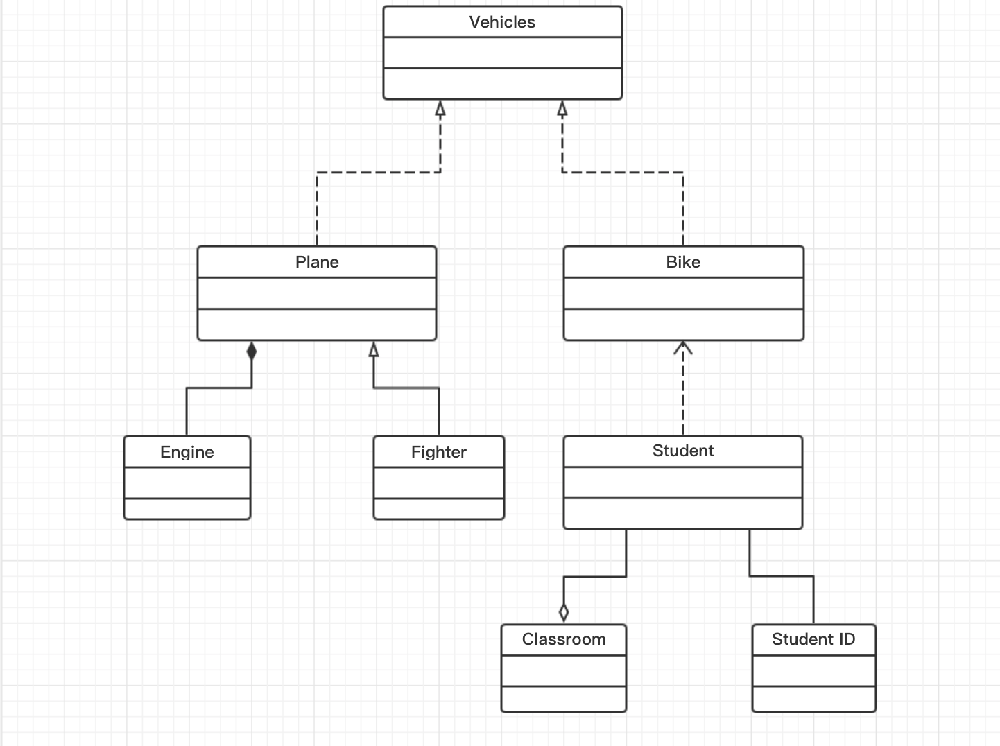

类的描述
在面向对象编程，类是一种面向对象计算机编程语言的构造，是创建对象的蓝图，描述了所创建的对象共同的属性和方法。
类的更严格的定义是由某种特定的元数据所组成的内聚的包。它描述了一些对象的行为规则，而这些对象就被称为该类的实例。
类有接口和结构。接口描述了如何通过方法与类及其实例互操作，而结构描述了一个实例中数据如何划分为多个属性。类是与某个层的对象的最具体的类型。类还可以有运行时表示形式（元对象），它为操作与类相关的元数据提供了运行时支持。
类的UML表示
类图是面向对象系统建模中最常用和最重要的图，主要是用来显示系统中的类、接口以及它们之间的静态结构和关系的一种静态模型。类图描述一类的属性和操作，也对系统的约束。类图显示集合的类，接口，关联，协作和约束，它也被称为作为结构图。
在类的UML图中，使用长方形描述一个类的主要构成，长方形垂直地分为三层，分别放置类的名称、属性和方法。
- 第一部分是类名。
- 第二部分是类的属性：即类的成员变量，类的性质。表示方式为：可见性 名称：类型 [= 缺省值]
- 可见性表示该属性对于类外的元素是否可见，包括共有（public）、私有（private）和受保护（protected），在类图中分别表示为
+、-和#。 - 类型表示属性的数据类型。
- 缺省值表示属性的初始值，可选。
- 可见性表示该属性对于类外的元素是否可见，包括共有（public）、私有（private）和受保护（protected），在类图中分别表示为
- 第三部分是类的方法：即类的成员方法，操作或行为。表示方式为：可见性 名称（参数列表）[: 返回值]。
- 可见性同类的属性。
- 参数列表表示方法的参数，多个参数之间用逗号隔开。
- 返回类型表示方法返回值类型，可选。
类图常见关系
在UML类图中，常见的有以下几种关系:泛化（Generalization）, 实现（Realization）,组合(Composition)，聚合（Aggregation）,关联（Association）,依赖(Dependency)。

- 泛化（Generalization）：是父类与子类之间的关系，描述的是 is a king of(
is a)的关系。表现为继承非抽象类。 - 实现（Realization）：是类与接口的关系，表示为类是接口所有特征和行为的实现。表现为继承抽象类。
- 组合(Composition)：是类之间整体与部分的关系。在组合关系中，整体对象负责成员对象的创建以及生命周期，即当整体对象被销毁时成员对象也会不复存在。
- 聚合（Aggregation）：是类之间整体与部分的关系。在聚合关系中，成员对象是整体对象的一部分，但是成员对象可以脱离整体对象独立存在。
- 关联（Association）：是类之间的结构关系，用于表示一类对象与另一类对象之间有联系。关联关系默认是双向的，表示相互知道，也可以单向关联、自关联、多重性关联。
- 依赖(Dependency)：是描述一个对象在运行期间会用到另一个对象的关系（使用关系），通常在运行期间产生，并且随着运行时的变化，依赖关系也可能发生变换。
各种关系的强弱顺序：泛化 = 实现 > 组合 > 聚合 > 关联 > 依赖
